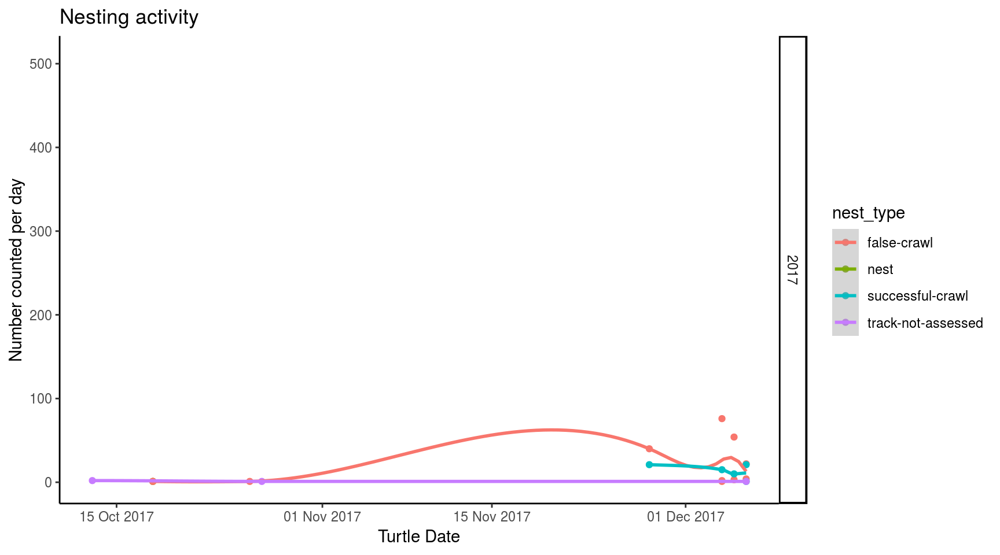
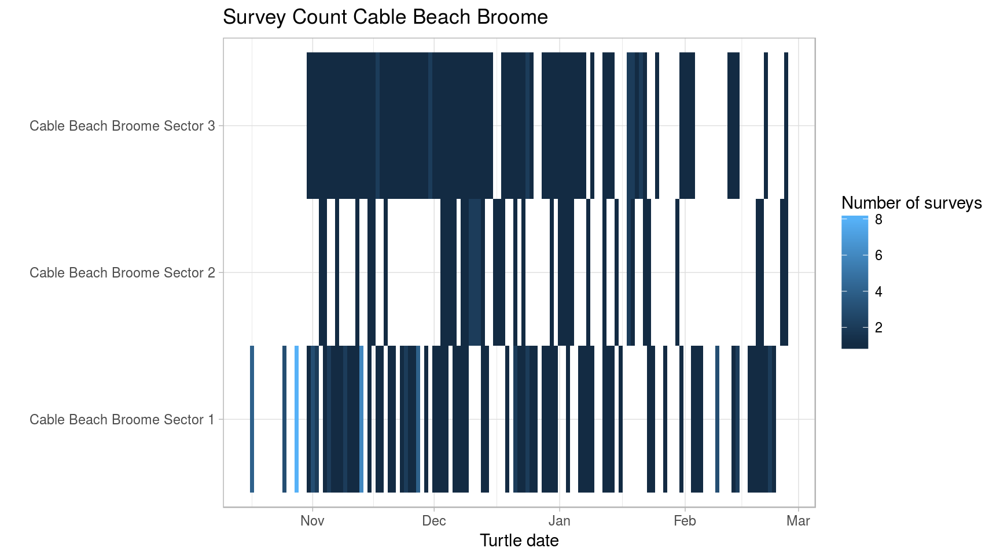

This section illustrates how to access data, and defines helper methods to filter, map, summarise, and plot data.
Once refined, these helper functions will become core wastdr functionality.
commments for QA messages.if (file.exists("tracks.Rda")){
load("tracks.Rda")
} else {
q = list(observer=4)
track_records <- wastdr::wastd_GET("turtle-nest-encounters", query=q)
tracks_all <- parse_turtle_nest_encounters(track_records)
surveys <- wastd_GET("surveys", query=q) %>% parse_surveys()
save(tracks_all, track_records, surveys, file = "tracks.Rda")
}To filter records to one area, we can either filter by area or site ID (once enabled), or simply filter by a bounding box. Additionaly, we’ll filter by date.
Site names and IDs are only correct at the time of writing. As they could change, please double-check the correct spelling of your own place names and their IDs in WAStD.
filter_2017 <- . %>% dplyr::filter(date > dmy("01/10/2017"), date < dmy("31/03/2018"))
filter_broome <- . %>% dplyr::filter(area_name=="Cable Beach Broome")
filter_broome_sites <- . %>% dplyr::filter(site_id %in% c(22, 23, 24))
filter_cbb1 <- . %>% dplyr::filter(site_name=="Cable Beach Broome Sector 1")
filter_cbb2 <- . %>% dplyr::filter(site_name=="Cable Beach Broome Sector 2")
filter_cbb3 <- . %>% dplyr::filter(site_name=="Cable Beach Broome Sector 3")
filter_eighty_mile_beach <- . %>% dplyr::filter(area_name=="Eighty Mile Beach Caravan Park")
filter_anna_plains <- . %>% dplyr::filter(area_name=="Anna Plains")
filter_port_hedland_sites <- . %>% dplyr::filter(site_id %in% c(35, 45))
filter_port_hedland_cemetery <- . %>% dplyr::filter(site_name=="Port Hedland Cemetery Beach")
filter_port_hedland_prettypool <- . %>% dplyr::filter(site_name=="Port Hedland Pretty Pool Beach")
filter_west_pilbara <- . %>% dplyr::filter(area_name=="West Pilbara Turtle Program beaches Wickam")
filter_delambre <- . %>% dplyr::filter(area_name=="Delambre Island")
filter_rosemary <- . %>% dplyr::filter(area_name=="Rosemary Island")
filter_thevenard <- . %>% dplyr::filter(area_name=="Thevenard Island")
tracks <- tracks_all %>% filter_2017Data (all tracks or filtered subsets) are filtered to only fresh observations, then grouped and tallied by date, species and type.
Daily summaries are shown in wide form as tables, and (using long form) as timeseries plots.
species_by_type <- . %>%
filter(nest_age=="fresh") %>%
group_by(species, nest_type) %>%
tally() %>%
ungroup() %>%
tidyr::spread(nest_type, n, fill=0)
daily_species_by_type <- . %>%
filter(nest_age=="fresh") %>%
group_by(date, species, nest_type) %>%
tally() %>%
ungroup()
daily_summary <- . %>%
daily_species_by_type %>%
tidyr::spread(nest_type, n, fill=0) %>%
DT::datatable(.)
tracks_ts <- . %>%
daily_species_by_type %>%
{ggplot2::ggplot(data=., aes(x = date, y = n, colour = nest_type)) +
ggplot2::geom_point() +
ggplot2::geom_smooth(method = "auto") +
# ggplot2::geom_line() +
ggplot2::scale_x_date(breaks = scales::pretty_breaks(),
labels = scales::date_format("%d %b %Y")) +
ggplot2::scale_y_continuous(limits = c(0, NA)) +
ggplot2::xlab("Date") +
ggplot2::ylab("Number counted per day") +
ggplot2::ggtitle("Nesting activity") +
ggplot2::theme_light()}This chapter uses the data and helpers from the above section and provides some insight into the different regions.
This section is by no means complete and can be extended as appropriate.
tracks %>% add_nest_labels %>% map_trackstracks %>% tracks_ts
#> `geom_smooth()` using method = 'loess' and formula 'y ~ x'
#> Warning in simpleLoess(y, x, w, span, degree = degree, parametric =
#> parametric, : span too small. fewer data values than degrees of freedom.
#> Warning in simpleLoess(y, x, w, span, degree = degree, parametric =
#> parametric, : at 17549
#> Warning in simpleLoess(y, x, w, span, degree = degree, parametric =
#> parametric, : radius 0.004225
#> Warning in simpleLoess(y, x, w, span, degree = degree, parametric =
#> parametric, : all data on boundary of neighborhood. make span bigger
#> Warning in simpleLoess(y, x, w, span, degree = degree, parametric =
#> parametric, : pseudoinverse used at 17549
#> Warning in simpleLoess(y, x, w, span, degree = degree, parametric =
#> parametric, : neighborhood radius 0.065
#> Warning in simpleLoess(y, x, w, span, degree = degree, parametric =
#> parametric, : reciprocal condition number 1
#> Warning in simpleLoess(y, x, w, span, degree = degree, parametric =
#> parametric, : at 17562
#> Warning in simpleLoess(y, x, w, span, degree = degree, parametric =
#> parametric, : radius 0.004225
#> Warning in simpleLoess(y, x, w, span, degree = degree, parametric =
#> parametric, : all data on boundary of neighborhood. make span bigger
#> Warning in simpleLoess(y, x, w, span, degree = degree, parametric =
#> parametric, : There are other near singularities as well. 0.004225
#> Warning in simpleLoess(y, x, w, span, degree = degree, parametric =
#> parametric, : zero-width neighborhood. make span bigger
#> Warning in simpleLoess(y, x, w, span, degree = degree, parametric =
#> parametric, : zero-width neighborhood. make span bigger
#> Warning: Computation failed in `stat_smooth()`:
#> NA/NaN/Inf in foreign function call (arg 5)
place <- "Example place"
surveys %>% plot_survey_count(place)
surveys %>% list_survey_count(place)surveys %>% survey_hours_per_person %>% DT::datatable(.)